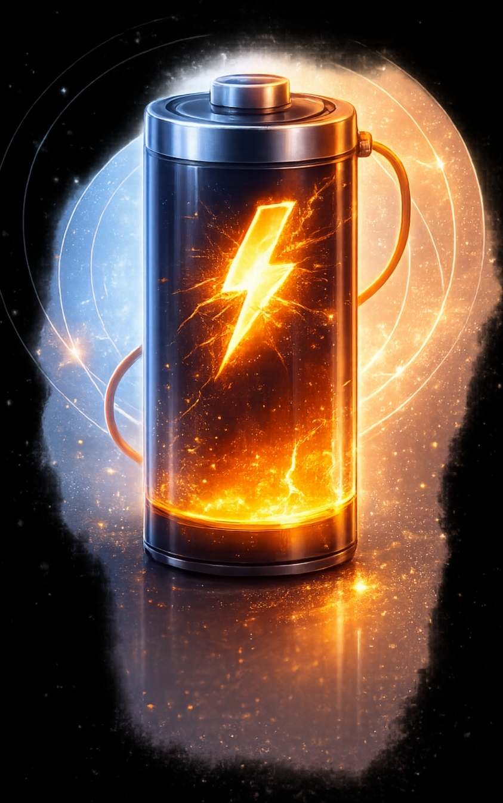
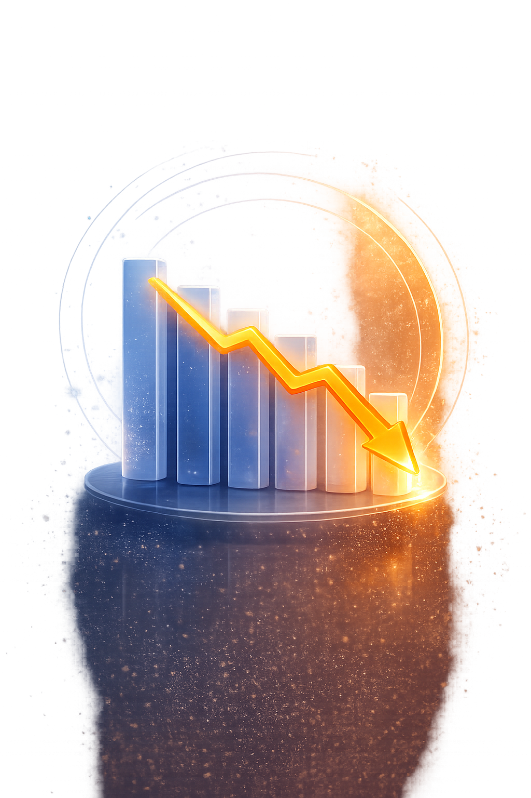
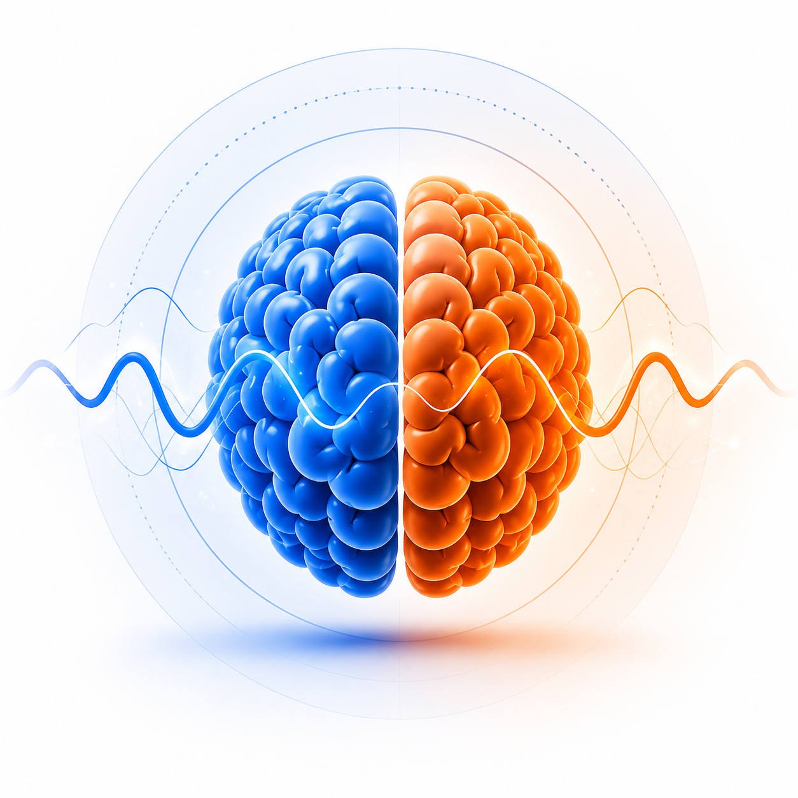
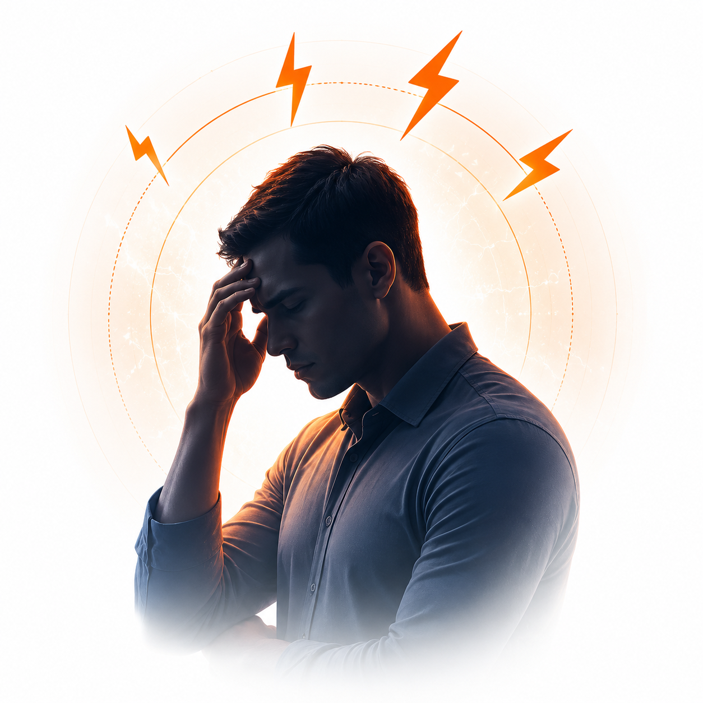
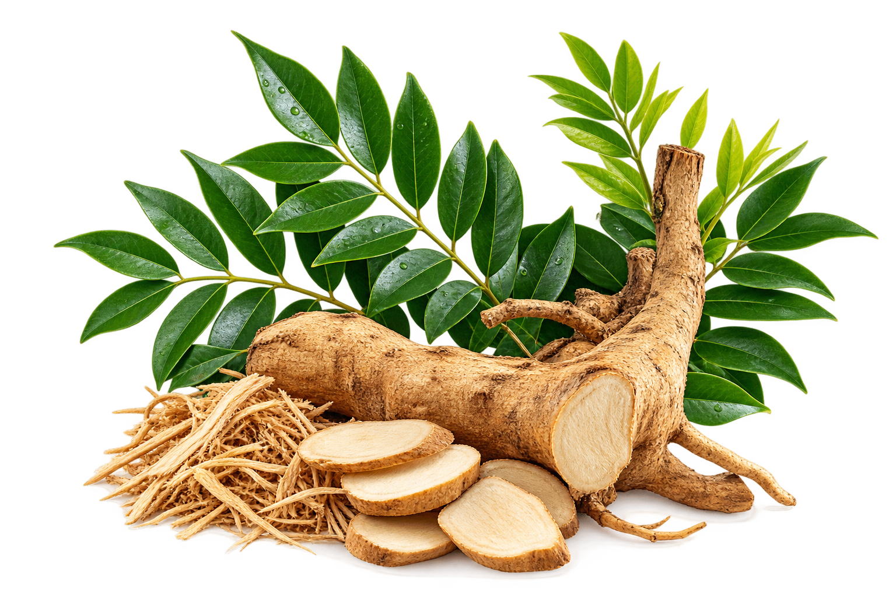

01
Cepat rasa penatFeeling tired faster
Tenaga harian semakin cepat habis.Daily energy runs out faster.
Formula Herba Pilihan
Dengan Teknologi ModenSelected Herbal Formula
With Modern Technology
TESTRA menggabungkan herba tradisional pilihan — Tongkat Ali, Epimedium & Tribulus — untuk sokong tenaga dan keyakinan lelaki secara semula jadi.TESTRA blends selected traditional herbs — Tongkat Ali, Epimedium & Tribulus — to support men's daily energy and confidence naturally.
Kenali 4 signal utama ini. Jangan abaikan badan yang sedang berusaha untuk terus kuat.Recognise these 4 key signals. Don't ignore a body that's working hard to keep going.


Tenaga harian semakin cepat habis.Daily energy runs out faster.

Daya tahan tidak sekuat dulu.Endurance isn't what it used to be.

Sukar fokus, mudah terganggu & cepat bosan.Harder to focus, easily distracted & restless.

Rasa tertekan dan kurang yakin diri.Feeling pressured and less confident.
Bila rutin mula terasa berbeza, badan mungkin perlukan sokongan yang lebih konsisten.When your routine starts feeling different, your body may need more consistent support.
Gabungan tradisi dan sains moden untuk menyokong tenaga, stamina, fokus dan keyakinan lelaki moden.A modern blend of tradition and science to support energy, stamina, focus and everyday confidence.
Sokongan tenaga harian daripada herba tradisional seperti Tongkat Ali.Daily energy support from traditional herbs such as Tongkat Ali.
Rasa lebih yakin & bertenaga dalam rutin harian anda.Feel more assured and energised in your daily routine.
Formula herba tradisional yang dipilih khas untuk lelaki.A selected traditional herbal formula created for men.

Herba tradisional Malaysia untuk vitaliti.
Digunakan secara tradisional untuk tenaga lelaki.
Sokongan tradisional untuk stamina.
Herba adaptogen untuk tenaga harian.
“Rasa lebih bertenaga sepanjang hari.”
“Mudah, discreet dan senang dibawa.”
“Saya suka konsep herba tradisional.”